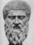

A frase citada, em que Platão compara Pródico e Tântalo, faz parte do Livro XI (582), da Odisseia de Homero. A razão desta comparação entre pode ser interpretada de muitas maneiras.
Uma hipótese consiste em pensar que Platão quer sobretudo remeter para a fragilidade de Pródico que compara à de Tântalo.
Outra hipótese é que Platão queira indicar que a obsessão de Pródico em relação à precisão linguística é uma tarefa sempre inacabada e inalcançável como acontece com a situação de Tântalo.
Uma terceira hipótese aponta para que esta comparação é uma antecipação da discussão sobre o hedonismo (351b-358 d), já que Tântalo representa o sofrimento, isto é, a ausencia de prazer.
|
|
Na Odisseia (11, 584), Ulisses descreve o Suplício de Tântalo; mergulhado em água até o pescoço e sob uma árvore carregada de saborosos frutos, sofria incessantemente de fome e sede. Sempre que tentava beber a água fugia dele e quando levantava os braços para agarrar os frutos, os galhos da árvore elevavam-se.
A expressão 'Suplício de Tântalo' refere pois o sofrimento de quem, desejando muito uma coisa, a vê escapar sempre que está prestes a alcançá-la.
|
